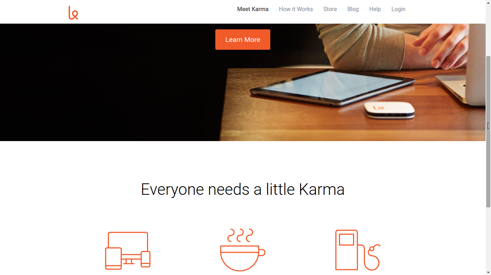

Here's some recent work.

New York Times Hack

About Me

Karma Clone
I've been in health care for 8 years – 2 as a tech and 6 as an RN. I've worked in med/surg, ED & psych. Recently I've been a hospice case manager, field work that places me in skilled nursing facilities, assisted living facilities, rehab facilities, and private homes. I've cared for patients who were independent, those that were total care, those that were critically ill, and those that were mentally ill. I've run the gamut from life to death.
I know the frontline health-care worker experience. I've lived it, and I'm surrounded by it everyday of my work week. Healthcare workers need good software. Bedside care is hard enough. Nurses, techs, and therapists need products that are going to improve workflow, not impede it.
Software should be intuitive and conform to the user, not the other way around. During rollout, go live should be a pleasure. It shouldn't be a reason to be upset or call in.
I'm starting my journey as a software developer because I've been a part of too many go lives that were disruptive, passed off as growing pains and the price of technological improvement. That needs to change. That needs to be unacceptable.
I want to represent frontline staff as software is developed. I want to be the bridge between those writing lines of code and those treating patients. I can speak nurse, and I can speak Java, HTML, CSS, and Node. Let's do this right. Let's take care of patients.
New York Times Hack
About Me
Karma Clone